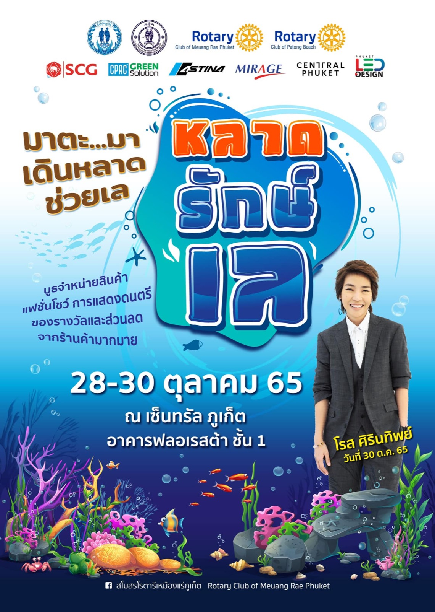

2565 · บทบาท · เหตุการณ์
โรตารีเหมืองแร่จัดหลาดละลายทรัพย์ ระดมทุนโครงการ Save Underwater World

หลาดละลายทรัพย์ เพื่อช่วยเพิ่มทรัพย์ในทะเล ❤️
🌈 วันที่ 28-30 ตุลาคม 65
ณ เซ็นทรัล ภูเก็ต อาคารฟลอเรสต้า ชั้น 1
🐙 พบกับ บูธจำหน่ายสินค้า จากหลากหลายธุรกิจ
🐠 ชมแฟชั่นโชว์ ชุดผ้าปาเต๊ะ แบรนด์ยาหยี
🐠 โชว์ชุดว่ายน้ำ Pink Coconut
🐠 การประกวดดนตรีโฟล์ค
🐙 มินิคอนเสริต "โรส ศิรินทิพย์"
✨(F) (R) (E) (E)✨
โปรโมชั่นส่วนลด
จากร้านค้ามากมายมาย
ใช้ได้ถึงสิ้นปี
✅ https://lin.ee/yYyXQt7
👏🏻👏🏻🤝🤝🤝🤝👏🏻👏🏻
มาร่วมเป็นส่วนหนึ่งในการส่งเสริมการอนุรักษ์ทรัพยากรทางทะเล ฟื้นฟูแนวปะการัง แหล่งท่องเที่ยวจังหวัดภูเก็ต กับ สโมสรโรตารีเหมืองแร่ภูเก็ต ในโครงการ Save Underwater World
https://www.facebook.com/rotarymeuangraephuket
#สโมสรโรตารีเหมืองแร่ภูเก็ต 😎
#บ้านอาจ้อ 💕